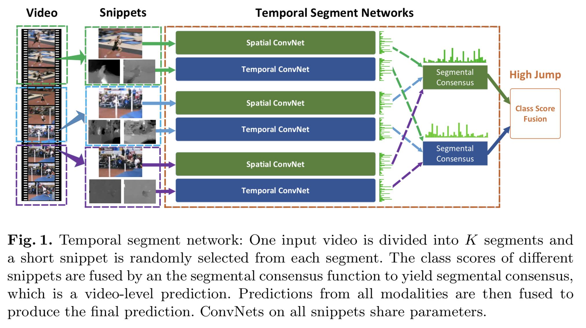

Abstract
论文目标
找到设计一个用于高效地进行视频动作识别的ConvNets架构的普适经验（而且在样本有限的情况下）
论文成果：
- TSN (temporal segment network) 框架
- 稀疏时序采样 (sparse temporal sampling)
- 视频级监督 (video-level supervision)
传统做法可能是固定一个窗口大小，如64帧，然后在整个视频上滑动——因此，无法学习大于64帧的动作信息，TSN则可以，因此称之“视频级”
- 应用 TSN 的诸多良好做法(经验) (good practices)
最终成绩：HMDB51 (69.4%) and UCF101 (94.2%)
Introduction
由于变形、视角的改变、镜头运动等原因，单纯地提取物体外形、变化特征并不是关键因素，发展出一种有效表示用以解决这些挑战（视频动作识别）才是至关重要的。应该指的是类似于CNN的输出这些更抽象的表示
ConvNets在视频动作识别中的应用主要面临着两个障碍：
1. 大范围时序结构 (long-range temporal structure) 在理解动作时扮演着很一个很重要的角色
主流的ConvNet框架一般只重视外形以及短期运动，因此缺乏提取大范围时序结构的能力。近期已经出现了一些针对这个问题的尝试，但基本都是基于密集时序采样 (dense temporal sampling)。这会引入过高的计算代价，面对超过最长序列长度的视频也会丢失重要信息。
2. 训练深度ConvNets需要大量的训练样本以期得到理想效果，但由于收集数据与进行标注的困难，目前的数据集在数量、多样性上均不够
因此，very deep ConvNets 虽然在图像识别有了出色的表现，但却面临着很高的过拟合风险。
上述这些挑战促使我们去研究两个问题：
- 如何设计一个能有效地学习大范围时序结构的框架
- 如何在有限的样本下学习ConvNet模型
我们的方法构建在在 Two-Stream 架构的基础之上。为了给时序结构建模，一个关键问题是连续帧的高度冗余——因此，密集时序采样是完全没有必要的，稀疏时序采样才是更合适的选择。基于这种考虑，我们形成了一个视频级的框架，并称之为“时序分段网络” (temporal segment network, TSN)。
此外，为了弥补训练样本的稀缺，我们探索出了一些最佳实践：
- 交叉模式预训练
- 正则化
- 数据增强
- 探索更多的输入模式
Details
Basic Conceptions
TSN 的目标是将整个视频的视觉信息利用起来，以便产生视频级的判断。它同样包含了一个空域ConvNets分支与时序ConvNets分支，不过它处理的不是单帧图像，也不是一堆帧序列，而是从整个视频里稀疏采样得到的一系列小片段（short snippets）。每个片段都会产生对动作类别的初步判断，在这基础上产生的“共识”（consensus）就是视频级的结论。在学习阶段，所使用的视频级别的损失值，而不是片段级别的(保证学到的是整个视频的结论，而不是片段上的结论)。

给定视频 $V$，我们将其切割为 $K$ 个时长一致的部分 $\{S_1, S_2, \cdots, S_K\}$，则有：
$TSN(T_1, T_2, \cdots, T_K) = \mathcal{H}(\mathcal{G}(\mathcal{F}(T_1; W), \mathcal{F}(T_2; W), \cdots, \mathcal{F}(T_K; W)))$
其中，$(T_1, T_2, \cdots, T_K)$ 是片段组成的序列，每个 $T_K$ 都从对应的 $S_K$ 中随机采样而来。$\mathcal{F}(T_K; W)$ 代表的是 ConvNets，$W$ 是对应的参数（可以注意到，ConvNets 的参数是所有片段共享的）。函数 $\mathcal{G}$ 用以从诸多片段产生的初步结论中收集信息，并从中提取出一个共识。基于这个共识，假设函数 $\mathcal{H}$ 预测了此视频属于各个动作类别的概率，论文中选用的是 Softmax 函数。
与标准分类交叉熵（standard categorical cross-entropy）相结合，最终得到如下的损失函数：
$\mathcal{L}(y, G) = -\sum^C_{i=1}y_i ( G_i - log\sum^C_{j=1}exp G_j ), where: G = \mathcal{G}(\mathcal{F}(T_1; W), \mathcal{F}(T_2; W), \cdots, \mathcal{F}(T_K; W))$
（字母具体含义自己看论文吧）
然后论文强调了一下这条公式确保了在 BP 的过程中，参数是基于“共识”（而不是片段级的初步结论）来更新的。同时，通过对所有视频固定统一的 $K$ 值，采样得到的片段只包含很小一部分的帧，这使得所需计算量得到锐减。
Good Practices in Learning TSN
虽然 TSN 提供了视频级学习的框架基础，但是为了取得理想效果，有些实践经验需要提起注意：
Network Architectures
在 TSN 架构中，作者选择了 Inception with Batch Normalization (BN-Inception) 作为搭建框架的组件，因其可以在准确与高效之间保持好平衡。Batch Normalization 论文见 https://arxiv.org/abs/1502.03167
与原始的 Two-Stream ConvNets 一样，在 TSN 里，空域分支处理单帧的 RGB 图像，时序分支处理堆叠起来的连续光流。
Network Inputs
作者在上边提到的两种输入类型之外，还探讨了两种新的方法：
- RGB 差异 (RGB difference)
- 变形光流域 (warped optical flow fields)
RGB 差异由相邻两帧相减得来，也许与主要的运动区域有着一些联系。除此之外，作者也实验了“堆叠 RGB 差异” (stacked RGB difference) 的效果。
如果单纯使用原始的光流作为输入，由于视频拍摄时的相机运动，光流域并不一定能集中于人类动作上边。受 iDT 的启发，作者提出了“变形光流域” 具体是个什么东西我没看懂，但是知道这个东西能大幅减少相机运动的影响
Network Training
因为视频动作识别的数据集都相对比较小，训练深度 ConvNets 网络面临着过拟合的危险。为了避免这种情况，作者采取了几个策略：
1. 交叉预训练
因为空域分支只是简单地以 RGB 图片作为输入，使用在 ImageNet 上已经完成训练的模型来初始化空域分支就显得十分自然了。而对于其他模块，诸如光流域、RGB 差异，它们本质上也是在捕捉视频的不同视觉部分 (visual aspects)，但是其分布与 RGB 是不同的。论文提出了一种交叉预训练的方案用以初始化时序分支：
首先，用一个线性变换将光流域的取值进行离散化，映射到 $[0, 255]$ 的整数。然后对 RGB 模型的第一层卷积层的权重进行修改，沿着 RGB 三条通道对权重进行平均，然后将均值重复 3 次。
这种初始化方法效果非常好，而且能减弱过拟合在实验中的影响。
但是我没看懂交叉预训练究竟是什么东西，计划去读一遍源码，读懂之后再回来更新
2. 正则化技巧
Batch Normalization 是解决“协变量迁移” (covariate shift) 的重要手段，它会估计 activation(不知道怎么理解，使激活函数得到激活的值?)的均值和方差，并将其变换到标准正态分布。这可以加速训练进程的收敛，但也会导致过拟合。因此，在用预训练模型进行初始化之后，作者选择“冻结” (freeze) 除了第一层之外的所有 BN 层的均值和方差，称这种方法为 partial BN。
同时，作者在全局池化层(不知道指的是哪一个)之后，额外添加了一个 dropout 层。The dropout ratio is set
as 0.8 for spatial stream ConvNets and 0.7 for temporal stream ConvNets.
3. 数据增强
原始的 Two-Stream ConvNets 使用了两种数据增强方法：
- 随机裁剪
- 水平翻转
作者在这提出了两种新的方法：
- 角落裁剪 (corner cropping)
- 尺寸抖动 (scale-jittering)
“角落裁剪”顾名思义，可以避免模型只关注于图像的中心区域。“尺寸抖动”则是将输入图像、光流域的大小固定在 $256\times340$，裁剪区域的高度、宽度则从 $\{256, 224, 192, 168\}$ 中随机选择。最终进行放缩变形得到 $224\times224$ 用以训练。
具体是个怎么变法还是没懂，一样，等我看源码
其余部分就不写了，没什么好写的，直接去看论文就行。